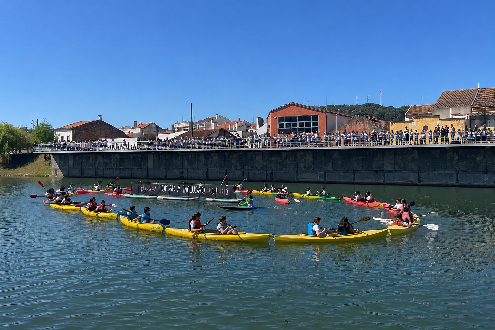

Nascente
É nos Olhos de Água, em Ansião. Tem outras nascentes como o Agroal, em Ourém, ou a Mendacha, em Tomar.
Projeto ambiental, educativo e cultural
Valorizar, conhecer e proteger o Rio Nabão, unindo comunidades, escolas e municípios em torno de um património natural e cultural.
O Projeto
O projeto Abraçar o Rio nasceu com o objetivo de aproximar as comunidades do Rio Nabão, promovendo o conhecimento, a valorização ambiental, a educação cívica e a preservação do património natural e cultural associado ao seu percurso.
É uma iniciativa que envolve clubes rotários, municípios, freguesias, escolas, instituições e cidadãos.

Rio Nabão
O Nabão nasce no concelho de Ansião e percorre cerca de 63km de territórios de grande riqueza natural, histórica e cultural até desaguar no rio Zêzere, na sua foz no concelho de Tomar.
É nos Olhos de Água, em Ansião. Tem outras nascentes como o Agroal, em Ourém, ou a Mendacha, em Tomar.
O rio atravessa vários concelhos, ligando paisagens, povoações, memórias e tradições.
Olhos e Fontes; açudes, valas e levadas; rodas e noras; pontes; moinhos e fábricas.
O Nabão é habitat de espécies vegetais e animais que importa conhecer e proteger.
Território
O projeto valoriza o Nabão como elemento agregador de território, identidade e cooperação intermunicipal. Nasce em Ansião, estabelece a ligação entre Pombal e Alvaiázere em parte do seu percurso e segue depois por Ourém e Tomar, até à sua foz.

Atividades
O Abraçar o Rio promove ações educativas, encontros com escolas, caminhadas, iniciativas ambientais, momentos culturais e atividades de sensibilização junto das comunidades locais.
Galeria
A galeria reunirá fotografias e vídeos do Nabão, das atividades, dos municípios, das freguesias e dos momentos mais marcantes do projeto.


Parceiros
O projeto conta com o envolvimento de municípios, freguesias, escolas, Rotary Clubs, instituições e cidadãos.
Espaço reservado para logótipos dos parceiros institucionais, municípios, Rotary, escolas e entidades associadas.
Contactos
Para colaborar, propor atividades, enviar fotografias ou obter mais informação sobre o projeto 'Abraçar o Rio', envie-nos uma mensagem.